¿De qué se trató el Mundial de 1938?
La Copa Mundial de la FIFA 1938 representó un nuevo paso en el crecimiento del torneo, consolidándolo como la competencia internacional de fútbol más importante del mundo. La edición reunió a selecciones de distintos continentes y permitió que el nivel futbolístico continuara aumentando respecto a los campeonatos anteriores.
Además del aspecto deportivo, el Mundial estuvo profundamente influenciado por el contexto político de la época. Las tensiones internacionales, la anexión de Austria por parte de la Alemania nazi y el descontento de varias selecciones sudamericanas por la elección de una sede europea marcaron el desarrollo del campeonato.
La edición de 1938 fue la última antes de la Segunda Guerra Mundial, conflicto que obligó a suspender la Copa del Mundo durante doce años. Por ello, este torneo quedó como el cierre de la primera etapa en la historia de los Mundiales y como uno de los campeonatos más recordados del período previo a la guerra.
Info que tenes que saber...
Info General
- Pais Anfitrion: Francia
- Fecha de Inicio: 4 de Junio de 1938
- Fecha de Finalizacion: 19 de junio de 1938
- Duracion: 15 dias
- Ciudades Sedes: 10
- Organizador: FIFA
- Edicion: III
info de la Ciudad
- Cantidad de Estadios: 10
- Estadio Principal: Stade Olympique de Colombes
- Cantidad de Selecciones: 15
- Partidos Jugados: 18
Estadisticas
- Goles Anotados: 84
- Promedio de gol: 4,67 por partido
- Maximo Goleador: Leônidas da silva (7 goles)
- Resultado de la final: Italia 4-2 Hungria
PODIO
| Puesto | Seleccion | Bandera |
|---|---|---|
| 1º Puesto | Italia |  |
| 2º Puesto | Hungria | 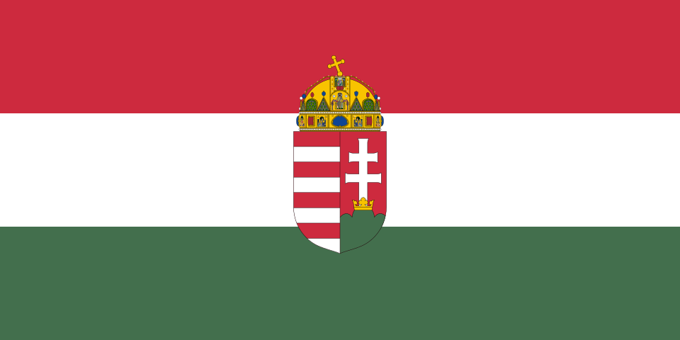 |
| 3º Puesto | Brasil |  |
| 4º Puesto | Suecia |  |
Historia Completa de la Copa Mundial de la FIFA 1938
Los comienzos del torneo
La tercera edición de la Copa Mundial de la FIFA se celebró en Francia entre el 4 y el 19 de junio de 1938. La elección de la sede generó una gran polémica, ya que muchos países sudamericanos esperaban que el torneo volviera a disputarse en América después de la edición de 1934 en Italia. Como consecuencia, Argentina decidió no participar y Uruguay también rechazó asistir como forma de protesta.
Un Mundial marcado por la política
El campeonato se disputó en un contexto internacional muy tenso. Europa se encontraba al borde de la Segunda Guerra Mundial, que comenzaría al año siguiente. Meses antes del Mundial, Austria había sido anexada por la Alemania nazi mediante el Anschluss, lo que provocó la desaparición de la selección austríaca, ya clasificada para el torneo. Varios de sus futbolistas pasaron a integrar el equipo alemán.
El desarrollo del campeonato
Al igual que en 1934, el Mundial mantuvo un sistema de eliminación directa desde la primera ronda, sin fase de grupos. Francia, como país anfitrión, e Italia, campeona defensora, obtuvieron la clasificación automática.
Durante la competencia, Brasil sorprendió con un juego ofensivo liderado por Leônidas da Silva, mientras que Hungría destacó gracias a una de las mejores generaciones de futbolistas de su historia.
La gran final
Italia avanzó eliminando sucesivamente a Noruega, Francia y Brasil, mientras que Hungría dejó en el camino a las Indias Orientales Neerlandesas, Suiza y Suecia.
La final se disputó el 19 de junio de 1938 en el Stade Olympique de Colombes, ante más de 45.000 espectadores. Allí, Italia derrotó a Hungría por 4-2 y se convirtió en la primera selección en conquistar dos Copas del Mundo consecutivas.
El legado del Mundial
El Mundial de 1938 fue el último antes del estallido de la Segunda Guerra Mundial. Debido al conflicto, las ediciones previstas para 1942 y 1946 fueron canceladas, por lo que la Copa del Mundo no volvió a disputarse hasta Brasil 1950.
Este campeonato marcó el cierre de la primera etapa de los Mundiales y dejó una huella tanto por su nivel futbolístico como por el complejo contexto político en el que se desarrolló.
Pelota Oficial del Mundial 1938
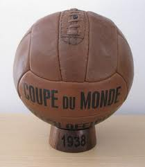
Allen
La Allen fue la pelota oficial utilizada durante la Copa Mundial de la FIFA Francia 1938. Fue fabricada en cuero marrón y mantenía el diseño clásico de la época, compuesto por paneles cosidos a mano y un sistema de cordones para cerrar la abertura por donde se colocaba la cámara de aire.
Aunque era muy similar al balón empleado en Italia 1934, la Allen presentaba una mejor calidad en los materiales y una fabricación más uniforme.
Información General
- Nombre: Allen
- Fabricante: Allen (Francia)
- Material: Cuero natural
- Color: Marrón
Características
- Diseño clásico de cuero cosido a mano.
- Mayor calidad que los balones anteriores.
- Absorbía agua cuando llovía.
- Utilizado durante todo el Mundial de 1938.
Dato curioso
Fue la pelota con la que Italia consiguió su segundo campeonato mundial consecutivo antes de la interrupción del torneo por la Segunda Guerra Mundial.
Selecciones Participantes
Europa
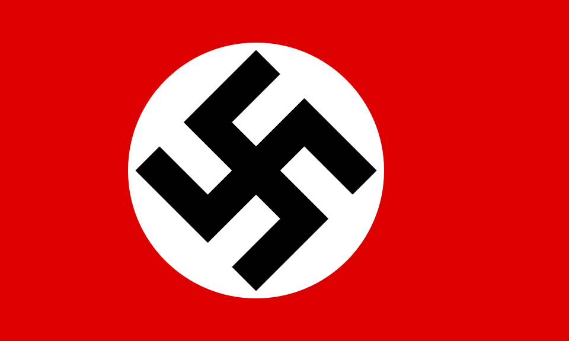
Alemania Austria
Austria  Belgica
Belgica 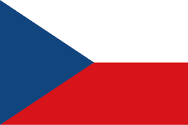
Checoslovaquia Francia
Francia 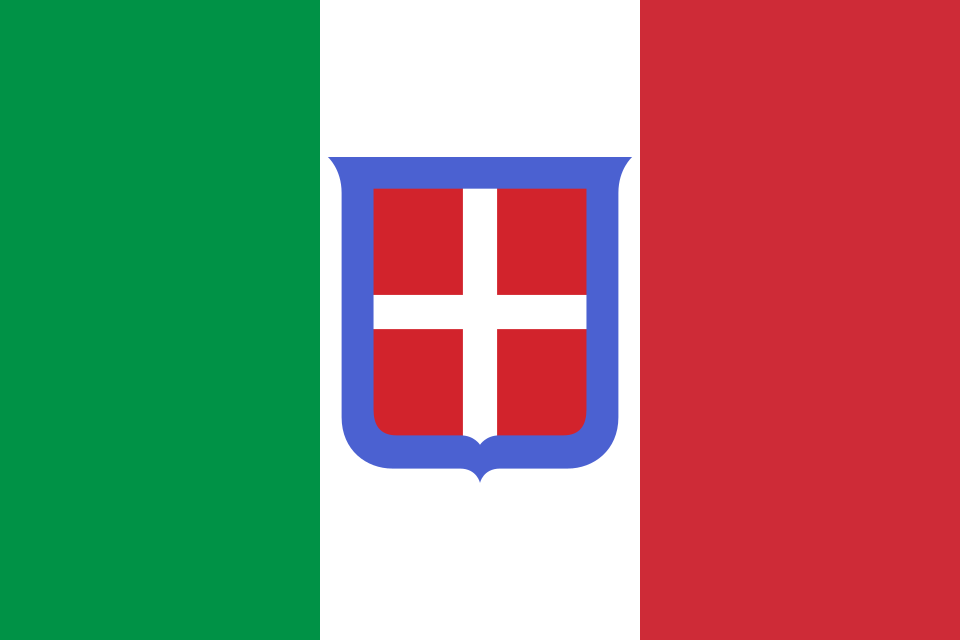
Italia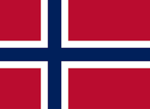
Noruega Paises Bajos
Paises Bajos  Polonia
Polonia  Rumania Suecia
Rumania Suecia  Suiza
Suiza Sudamerica
Brasil Norteamerica y Centroamerica
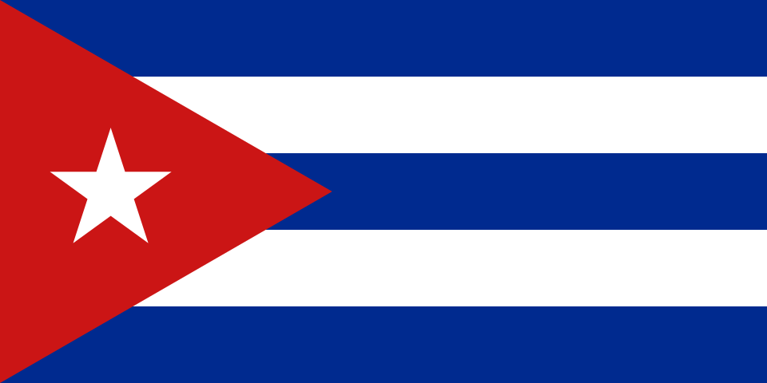
CubaAsia
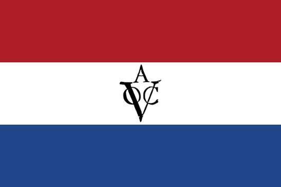
Indias Orientadas NeerlandesasSedes y Estadios |
||||||||
|---|---|---|---|---|---|---|---|---|
| Para recibir a las mejores selecciones del planeta, Francia dispuso de una infraestructura deportiva de primer nivel. Estos fueron los estadios donde se disputaron los encuentros del campeonato de 1938. |
||||||||
| Nombre del Estadio | Estadio | Descripción | Espectadores aprox. | Partidos Juagdos aprox. | ||||
| Stade Olympique de Colombes (París) | 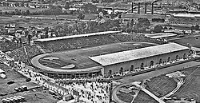 |
Fue el estadio principal del Mundial de 1938 y sede de la gran final entre Italia y Hungría. Con capacidad para más de 60.000 espectadores, era uno de los recintos deportivos más importantes de Francia y ya había albergado los Juegos Olímpicos de 1924. | 60.000 aprox. | 8 | ||||
| Stade Vèlodrome (Marsella) | 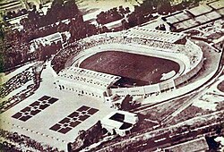 |
Ubicado en la ciudad de Marsella, fue una de las sedes con mayor asistencia de público. Su gran capacidad y el entusiasmo de los aficionados lo convirtieron en un escenario destacado del campeonato. | 48.000 aprox. | 3 | ||||
| Parc des Princes (Paris) |  |
Uno de los estadios más emblemáticos de París. Durante el Mundial de 1938 recibió varios encuentros importantes y destacó por su excelente ubicación y ambiente, convirtiéndose en una de las sedes más concurridas del torneo. | 40.000 aprox. | 3 | ||||
| Parc Leacure (Burdeos) | 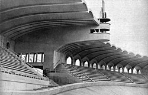 |
Sede del Mundial de 1938. Fue elegido por sus modernas instalaciones y recibió varios encuentros de la competición. | 34.694 aprox. | 2 | ||||
| Stade de la Meinau (Estrasburgo) | 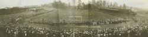 |
Estadio ubicado en Estrasburgo que recibió encuentros de la primera fase del campeonato. | 30.000 aprox. | 2 | ||||
| Stade de la Cavée Verte (Le Havre) | 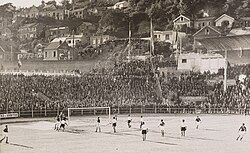 |
Estadio situado en Le Havre que fue sede de un partido del Mundial. Destacó por su buena organización y ambiente. | 22.000 aprox. | 1 | ||||
| Vélodrome Municipal (Reims) | 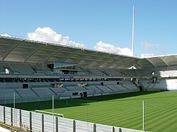 |
Recinto deportivo de la ciudad de Reims que albergó un encuentro de la Copa del Mundo de 1938. | 21.684 aprox. | 1 | ||||
| Stade Chapou (Toulouse) | 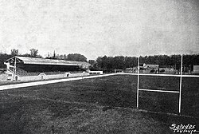 |
Estadio de Toulouse que recibió dos partidos del Mundial. Era uno de los principales escenarios deportivos del sur de Francia. | 15.000 aprox. | 2 | ||||
| Estadio Victor Boucquey (Lille) | 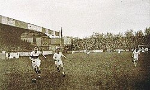 |
Estadio ubicado en Lille que fue sede de un partido del torneo, ofreciendo un gran ambiente para los aficionados. | 15.000 aprox. | 1 | ||||
| Stade du Havre | 25.000 aprox. | 1 | 0 | 6 | -6 | 0% | ||
- PJ: PARTIDOS JUGADOS
- PG: PARTIDOS GANADOS
- PE: PARTIDOS EMPATADOS
- PP: PARTIDOS PERDIDOS
- GF: GOLES A FAVOR
- GC: GOLES EN CONTRA
- DG: DIFERENCIA DE GOL
- RENDIMIENTO: BASADA EN LA EFECTIVIDAD DE PARTIDOS (PG, PE, PP)